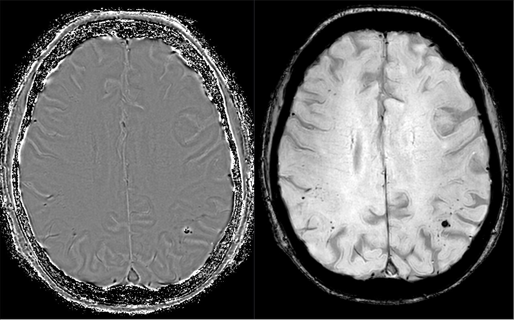

Ficha del catálogo
Angiopatía amiloide cerebral
- Sistema
- Nervioso
- Modalidad
- RM
- Región
- Encéfalo, corteza y sustancia blanca lobar
- Dificultad
- Avanzado
La angiopatía amiloide cerebral consiste en el depósito de proteína amiloide en la pared de las arterias corticales y leptomeníngeas, lo que fragiliza el vaso y predispone a hemorragia lobar recurrente en personas de edad avanzada. Es una causa frecuente de hemorragia intracerebral no hipertensiva y se asocia a deterioro cognitivo.
Técnica
Resonancia magnética con secuencia sensible a susceptibilidad magnética, indispensable para contar microsangrados y detectar siderosis superficial, junto con FLAIR, T2 y difusión. La tomografía se emplea en el episodio agudo para valorar el hematoma.
Qué observar
- Microsangrados de distribución cortical y corticosubcortical
- Preservación relativa de ganglios basales, tálamo y protuberancia
- Siderosis superficial cortical en surcos y convexidad
- Hematoma lobar agudo con extensión al espacio subaracnoideo vecino
- Hiperintensidades confluentes de sustancia blanca y espacios perivasculares en centro semioval
- Infartos corticales pequeños en difusión, que indican actividad de la enfermedad
Hallazgos
Se identifican múltiples focos puntiformes de pérdida de señal en la secuencia de susceptibilidad, situados en la corteza y en la unión corticosubcortical, con escasa o nula afectación de los núcleos grises profundos. La siderosis superficial se manifiesta como líneas curvilíneas hipointensas que siguen los surcos. El sangrado mayor adopta forma de hematoma lobar, con frecuencia frontal, parietal u occipital, que puede romper hacia el espacio subaracnoideo.
Perlas
La topografía de los microsangrados diferencia las dos grandes causas de sangrado crónico de pequeño vaso, ya que la distribución lobar sugiere angiopatía amiloide y la distribución profunda en ganglios basales, tálamo y protuberancia sugiere origen hipertensivo. La siderosis superficial es un marcador de riesgo de nuevo sangrado y debe informarse siempre.
Diagnóstico diferencial
- Vasculopatía hipertensiva crónica
- Los microsangrados predominan en ganglios basales, tálamo, protuberancia y cerebelo, con antecedente de hipertensión mal controlada.
- Lesión axonal difusa antigua
- Antecedente traumático, con focos en cuerpo calloso y tronco dorsolateral además de la unión corticosubcortical.
- Metástasis hemorrágicas múltiples
- Presentan realce, edema perilesional y componente sólido, y suelen crecer en controles sucesivos.
- Cavernomatosis múltiple
- Al menos algunas lesiones muestran núcleo heterogéneo con anillo completo de hemosiderina y no solo focos puntiformes.
Simuladores
- Calcificaciones corticales antiguas
- Vasos piales normales vistos de perfil en secuencias de susceptibilidad
- Artefactos de campo junto al hueso temporal y a los senos paranasales
Por modalidad
- TC
- Detecta el hematoma lobar agudo y su extensión, pero no visualiza microsangrados ni siderosis.
- RM
- Es imprescindible para el diagnóstico porque muestra microsangrados, siderosis superficial y carga de lesión de sustancia blanca.
Protocolo
Secuencia de susceptibilidad de alta resolución en todo el encéfalo, FLAIR, T2, difusión y volumétrica T1 para valorar atrofia (conviene mantener los mismos parámetros en los controles porque el número de microsangrados detectados depende de la técnica).
Clasificación
El diagnóstico en vida se apoya en criterios que combinan la edad del paciente, la presencia de hemorragias lobares múltiples o de microsangrados de distribución lobar, la siderosis superficial cortical y la exclusión de otras causas. La certeza definitiva es anatomopatológica.
Errores frecuentes
- Informar microsangrados sin precisar su distribución, dato que determina la causa probable
- Utilizar secuencias insensibles a productos hemáticos y considerar el estudio negativo
- Pasar por alto la siderosis superficial por no revisar la convexidad en cortes finos

angiopatía amiloide microsangrados lobares siderosis superficial hemorragia lobar susceptibilidad magnética deterioro cognitivo